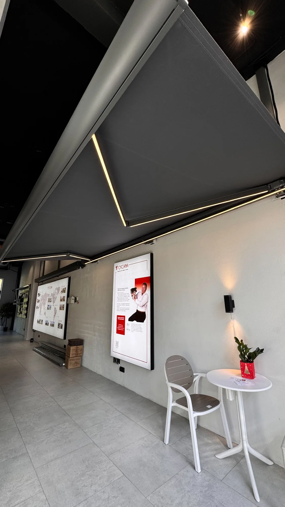

Маркиза помогает организовать тень у дома, кафе или ресторана. Перед заказом определите, какую зону хотите закрыть и как будете пользоваться террасой. Размер, ткань и управление выбирайте как части одного решения.
Где вам нужна тень
Расскажите специалисту, нужна ли защита обеденной зоне, месту отдыха или столикам заведения. Назначение помогает начать подбор, а внешний вид стоит обсуждать вместе с архитектурой фасада.
- 01
Определите зону
Покажите участок террасы, который хотите затенить. Укажите, речь о доме, кафе, ресторане или другом объекте.
- 02
Подготовьте размеры и фото
Сообщите предполагаемые размеры и пришлите фотографии места установки. Окончательные размеры уточняют на замере.
- 03
Покажите фасад
Расскажите, какое оформление хотите получить. IGS Outdoor помогает подобрать маркизу под дизайн дома или заведения.

Кассетная или открытая
Можно выбрать кассетную или открытую модель. Сравните их с учётом фасада и желаемого вида террасы.
Кассетная модель
Ткань и механизм полностью закрываются внутри корпуса. Форму и исполнение обсудите вместе с размером маркизы.
Открытая модель
Открытая модель имеет более простую конструкцию. Подходящий вариант выбирают под архитектуру и задачу.
Обсудите размер, цвет и исполнение вместе, чтобы маркиза выглядела частью вашей террасы.
Что входит в вашу комплектацию
Доступны ручное и автоматическое управление, электропривод и датчик ветра. LED-подсветка доступна в зависимости от комплектации, поэтому состав выбранного предложения нужно уточнить до заказа.
Ткань и размер
IGS Outdoor предлагает разные размеры и варианты ткани. Покажите фасад и расскажите о желаемом оформлении.
Управление и свет
Сравните ручное и автоматическое управление. Уточните наличие датчика ветра и подсветки именно в выбранном варианте.
Пять вопросов до заказа
- Какую часть террасы нужно затенить?
- Каковы предполагаемые размеры и место установки?
- Какой вариант подходит фасаду: кассетный или открытый?
- Какая ткань и какое управление нужны?
- Какие условия эксплуатации у выбранной модели?
Главное назначение маркизы — солнцезащита, поэтому не переносите на неё ожидания от стационарной крыши. Если для вас важен определённый погодный сценарий, сообщите о нём специалисту до заказа.
Посмотреть маркизыЧастые вопросы
Подходит ли маркиза для кафе или ресторана?
Да, маркизы подходят для кафе и ресторанов. При подборе учитывают назначение террасы и оформление фасада.
Чем кассетная модель отличается от открытой?
Кассетная модель полностью закрывает ткань и механизм внутри корпуса. Открытая модель имеет более простую конструкцию.
Автоматика и подсветка входят в любую маркизу?
Комплектация зависит от выбранного варианта. Уточните, предусмотрены ли ручное или автоматическое управление и LED-подсветка в вашем варианте.